📜 9岁发病，28岁被判死刑，三万人送行：这个男人的一生，比爽文还离奇
Dostoevsky: A Life More Extraordinary Than Fiction
2022年夏天，中国政法大学罗翔教授professor[prəˈfesə] n. 教授在直播间引用了一句：
“要爱具体的人，不要爱抽象abstract[ˈæbstrækt] adj. 抽象的的人”。
像一颗子弹bullet[ˈbʊlɪt] n. 子弹，直击无数人眉心。
视频播放量过亿，弹幕更是如瀑布般汹涌turbulent[ˈtɜːbjʊlənt] adj. 汹涌的：
“彻底治好了我的精神mental[ˈmentl] adj. 精神的内耗”
“我终于明白comprehend[ˌkɒmprɪˈhend] v. 理解为什么对谁都好，却谁都处不好”
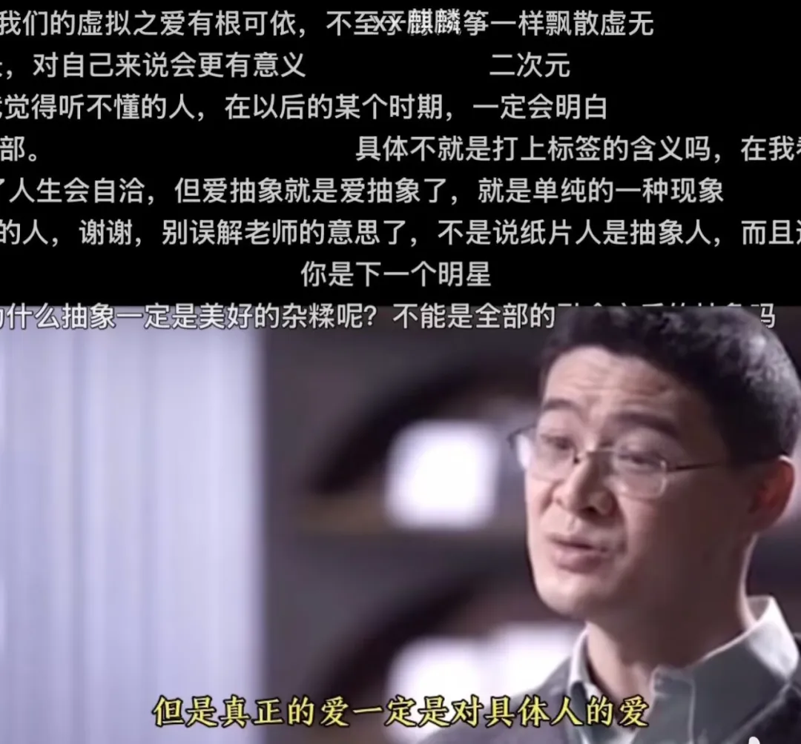
可惜99%人不知道，这句颠覆subvert[səbˈvɜːt] v. 颠覆无数人人生观的金句，
出自一个9岁得癫痫，28岁上刑场，一辈子都在赌博gamble[ˈɡæmbl] v. 赌博的疯子。
然而鲁迅却说他是：“人类灵魂soul[səʊl] n. 灵魂的伟大审问者"。”
几乎所有读过他作品的文学大师，都感觉灵魂被窥视peep[piːp] v. 窥视，内心的阴暗角落无处可藏。
萨特、海明威、卡夫卡、黑塞、村上春树……
无数文学巨匠都承认：论及人性humanity[hjuːˈmænəti] n. 人性的深度，无人能及他十分之一。
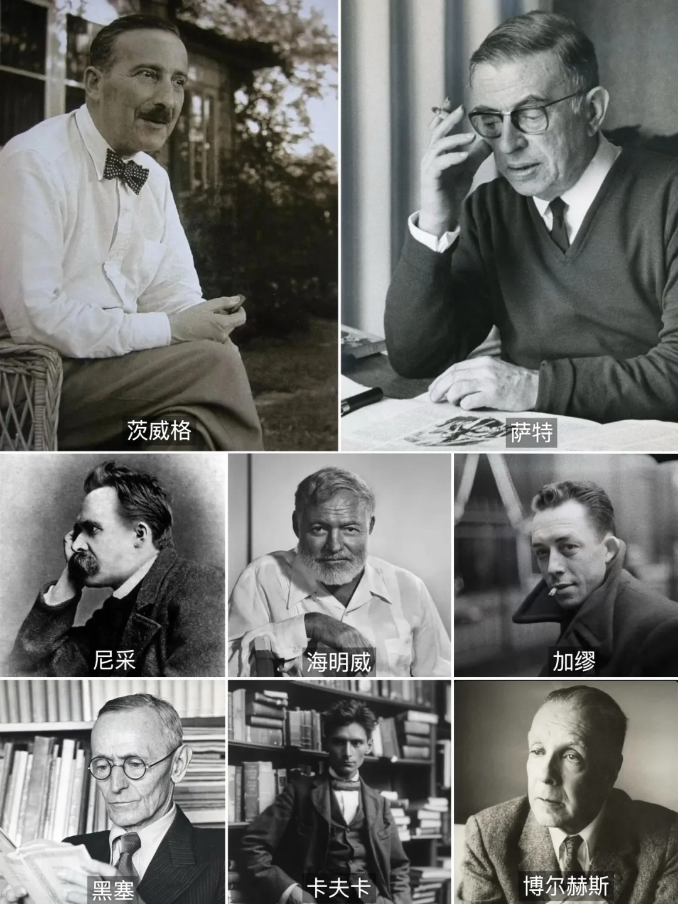
“发现他，就像第一次发现自己会爱、会痛、会恐惧dread[dred] n. 恐惧。那种战栗shudder[ˈʃʌdə] v. 战栗，终生难忘。”
是的，他就是一生都活在苦难misery[ˈmɪzəri] n. 苦难中，却创作出全人类zui深刻的作品的，
俄罗斯文学巨擘giant[ˈdʒaɪənt] n. 巨擘，陀思妥耶夫斯基。
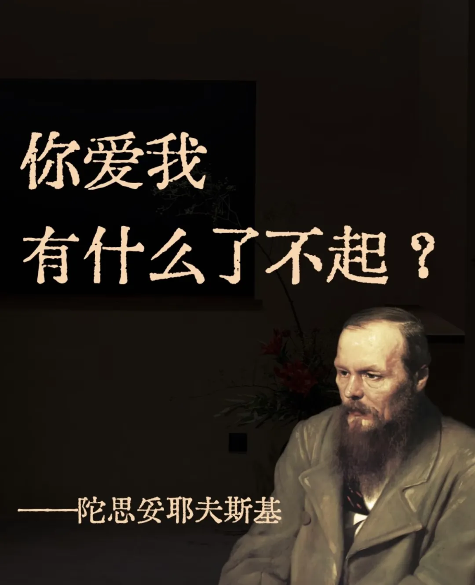
为什么这样一位癫痫病人 x 死刑犯 x 赌徒，竟能被这么多大师奉为灵魂导师mentor[ˈmentɔː] n. 导师？
实在是因为他的人生就是一场残酷brutal[ˈbruːtl] adj. 残酷的的精神试炼，以至于他对人性理解得太超前、太透彻！
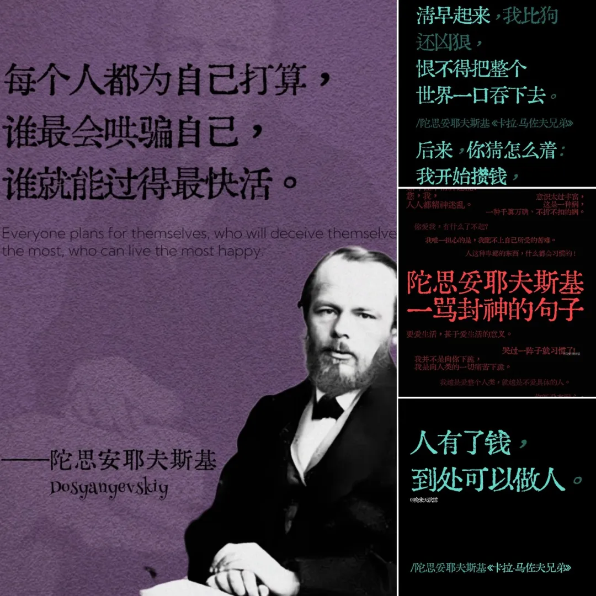
执行枪决最后一分钟，传来沙皇特赦令，改判流放exile[ˈeksaɪl] n. 流放西伯利亚。
为了缓解relieve[rɪˈliːv] v. 缓解精神痛苦，他沉迷赌博，多次债台高筑，被债主追杀。
只因苦难没有击垮他，反而成为创作的燃料fuel[ˈfjuːəl] n. 燃料。
我只担心fret[fret] v. 担心一件事，我怕我配不上自己所受的苦难
于是，他把每一次痛苦都化作文字，写出了人类灵魂最深处depth[depθ] n. 深处的声音。
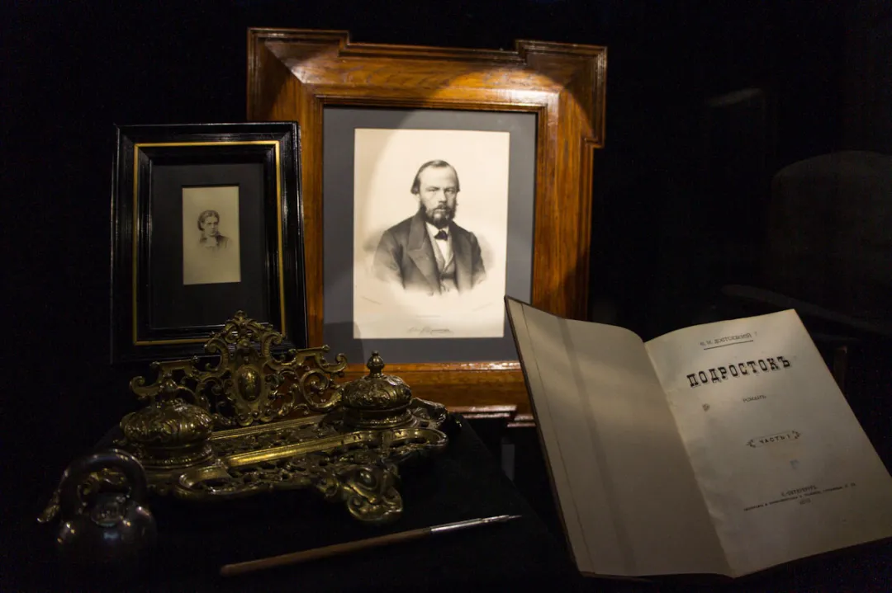
他100年前说的话，至今还在社交平台疯狂传播spread[spred] v. 传播，字字灼心。
为什么要爱自己，他一早道明state[steɪt] v. 说明：
“要爱别人，首先要爱自己，因为世界上的一切，都是以个人利益interest[ˈɪntrəst] n. 利益为基础的。”
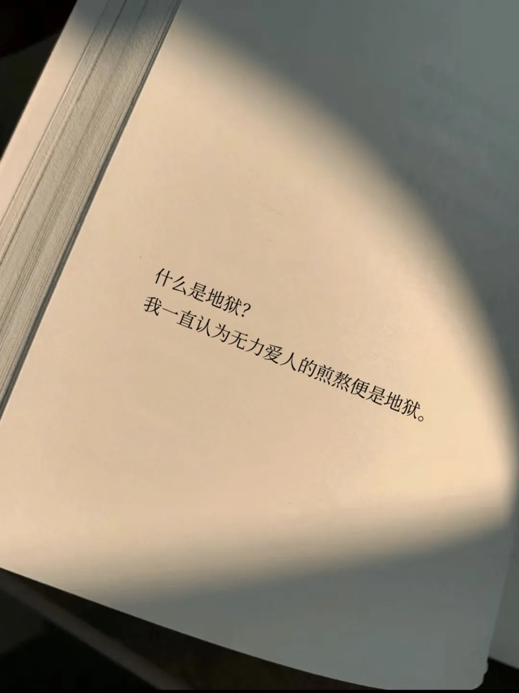
他戳破虚荣vanity[ˈvænəti] n. 虚荣与伪装的假面：
“谁最会哄骗deceive[dɪˈsiːv] v. 欺骗自己，谁才生活得最快乐。”
他看透人性的懦弱cowardice[ˈkaʊədɪs] n. 懦弱和卑劣：
“人这种卑鄙despicable[dɪˈspɪkəbl] adj. 卑鄙的的东西，什么都会习惯的。”
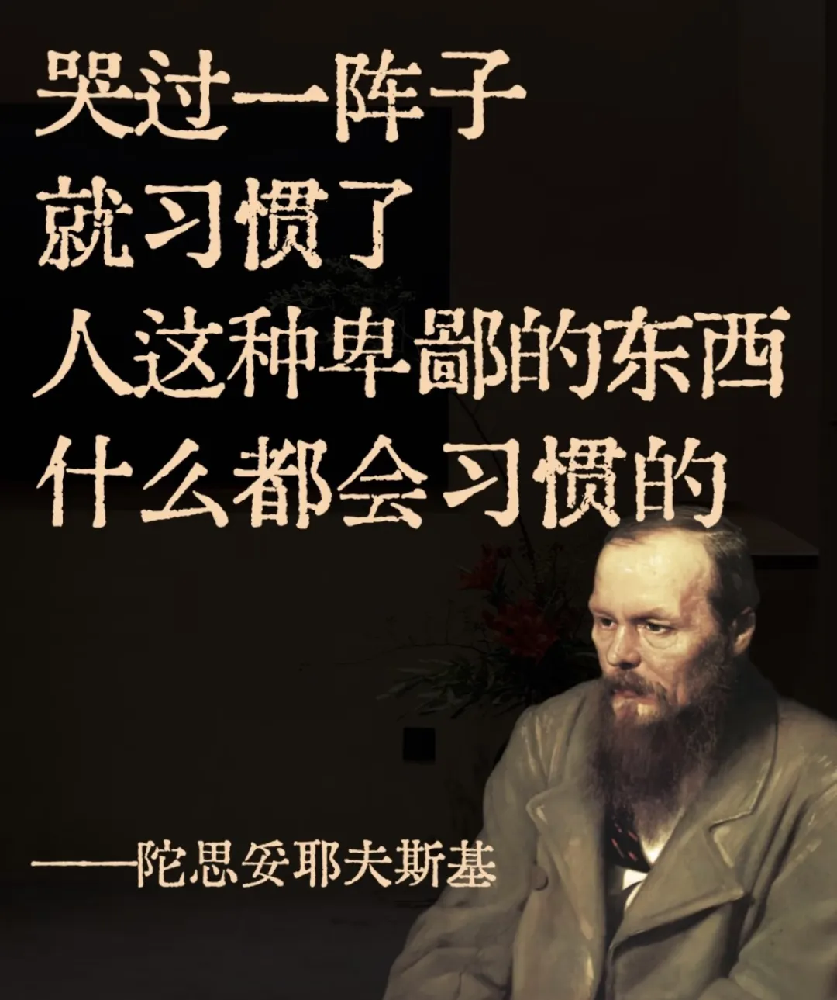
毛姆说：“世界globe[ɡləʊb] n. 世界上只有两种人，一种读过陀思妥耶夫斯基的，一种没读过的。
而读过的人，灵魂已经被他永久permanent[ˈpɜːmənənt] adj. 永久的地改变了。”
他教我们如何面对confront[kənˈfrʌnt] v. 面对苦难：
“我只担心一件事，我怕fear[fɪə] v. 害怕我配不上自己所受的苦难。”
意思是：永远不要白白受苦suffer[ˈsʌfə] v. 受苦。
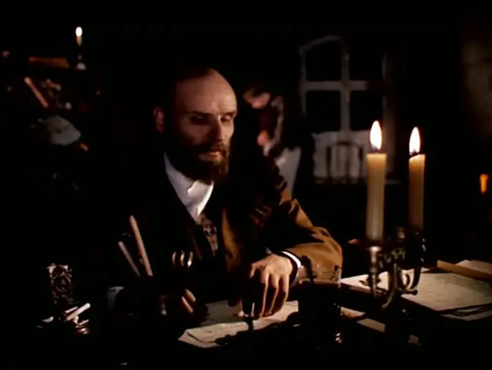
陀思妥耶夫斯基一生中的26天》剧照still[stɪl] n. 剧照
从小缺爱的人，会疯狂insane[ɪnˈseɪn] adj. 疯狂的地给不缺爱的人献爱。就好像穷光蛋在给亿万富翁捐款donate[dəʊˈneɪt] v. 捐款
这就是为什么很多人越付出devote[dɪˈvəʊt] v. 付出，对方越不在乎。
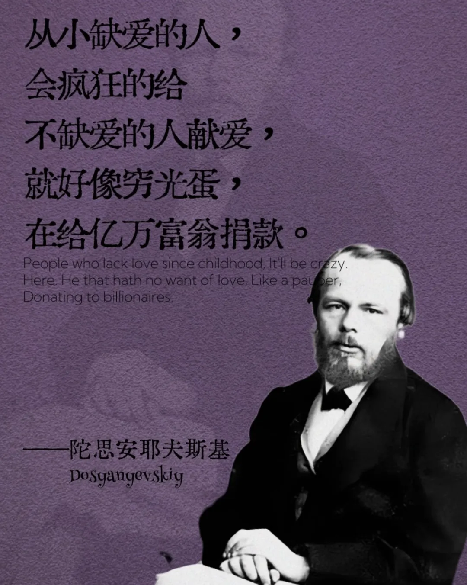
而关于守住底线baseline[ˈbeɪslaɪn] n. 底线，他说：
“最要紧的是，我们首先应该善良，其次要诚实honest[ˈɒnɪst] adj. 诚实的，最后是永不相忘。”
翻译translate[trænsˈleɪt] v. 翻译一下：可以穷，可以惨，但不能坏。
这是为什么，每当身边朋友感到迷茫、虚无、孤独lonely[ˈləʊnli] adj. 孤独的时，
我只说一句phrase[freɪz] n. 一句话：“去读读陀思妥耶夫斯基吧”。
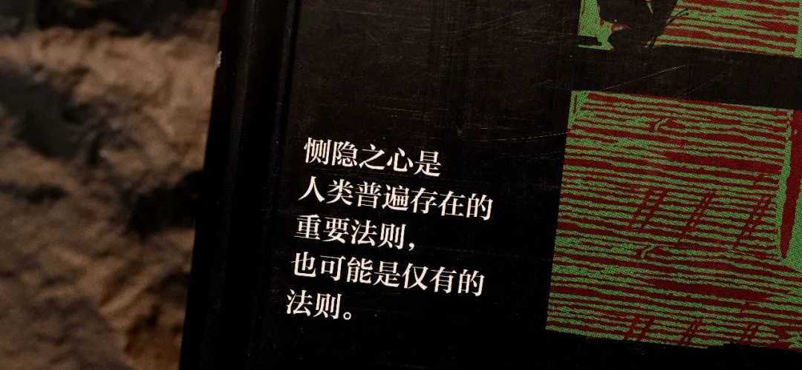
在这个焦虑anxiety[æŋˈzaɪəti] n. 焦虑泛滥的时代，他的深刻和真诚，比任何心灵鸡汤都管用。
如果不知道怎么挑选作品和版本，今天以十二分诚意推荐recommend[ˌrekəˈmend] v. 推荐这套——
《心灵的理想地：陀思妥耶夫斯基文集anthology[ænˈθɒlədʒi] n. 文集》
一次收录compile[kəmˈpaɪl] v. 收录他3部超高分经典
《白痴idiot[ˈɪdiət] n. 白痴》《罪与罚》《卡拉玛左夫兄弟》
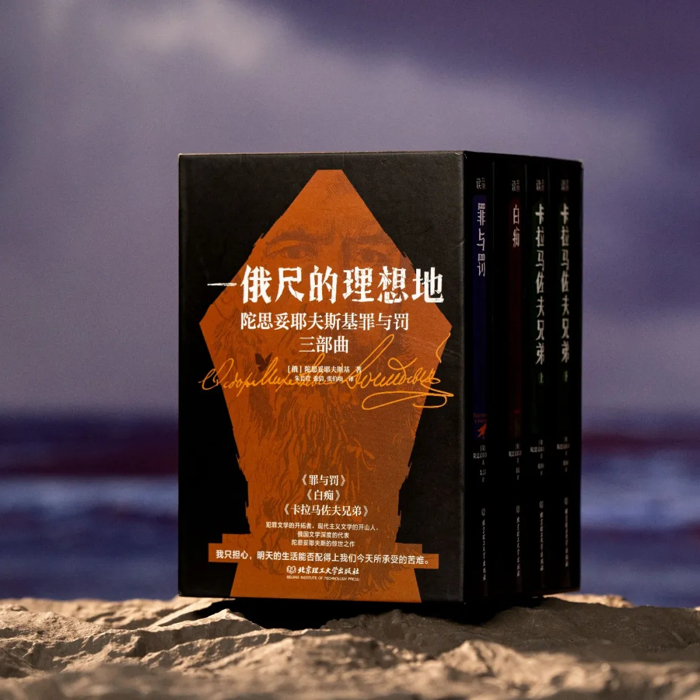
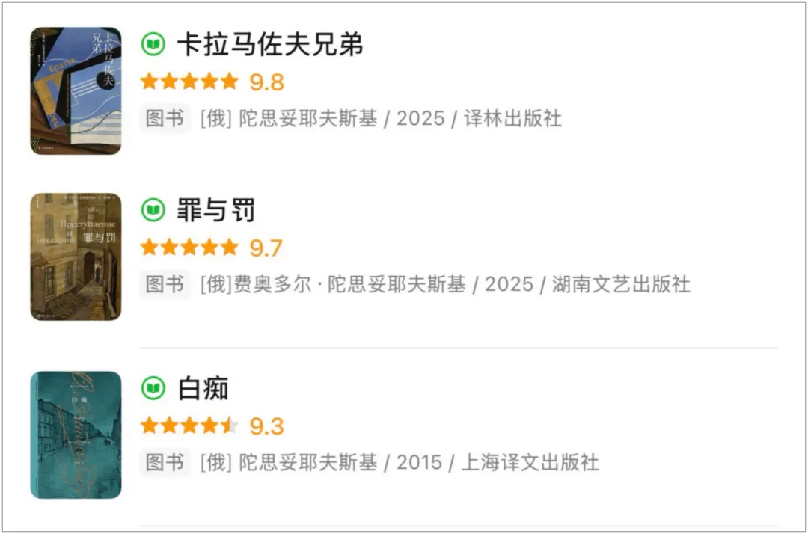
这套书有多值得worthwhile[ˌwɜːθˈwaɪl] adj. 值得的一读？评论区简直是大型表白现场venue[ˈvenjuː] n. 现场：
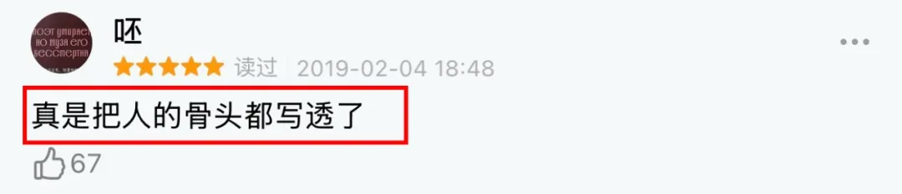
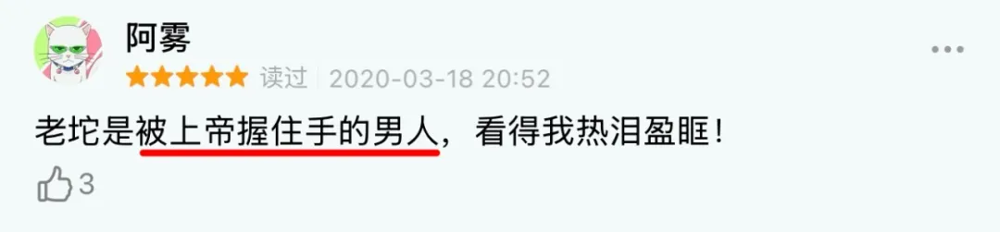
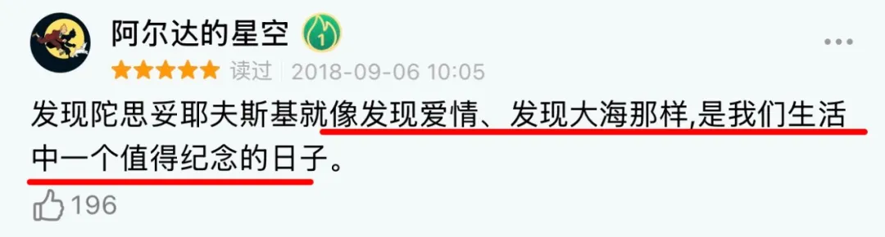
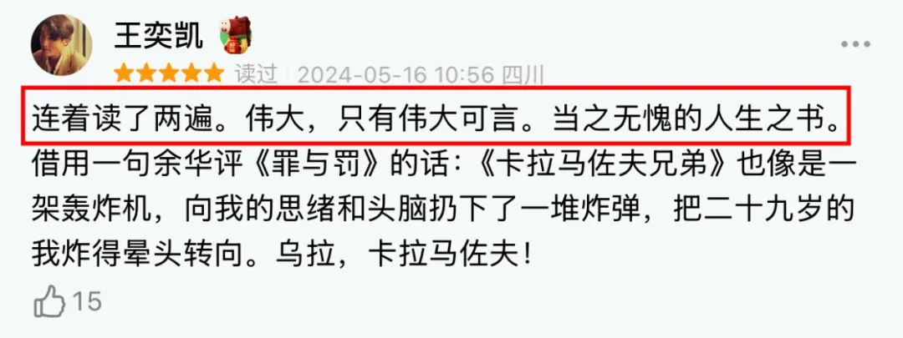
三部名著，3种灵魂的极限拷问torture[ˈtɔːtʃə] n. 拷问——
《罪与罚》：如果你也曾动过“替天行道”的念头notion[ˈnəʊʃn] n. 念头
这本书会告诉你：作恶的代价，不是法律惩罚，而是内心的撕裂与崩塌collapse[kəˈlæps] v. 崩塌。
一个穷困潦倒destitute[ˈdestɪtjuːt] adj. 穷困潦倒的的大学生，打着“替天行道”旗号，杀死“吸穷人血”的老太婆。
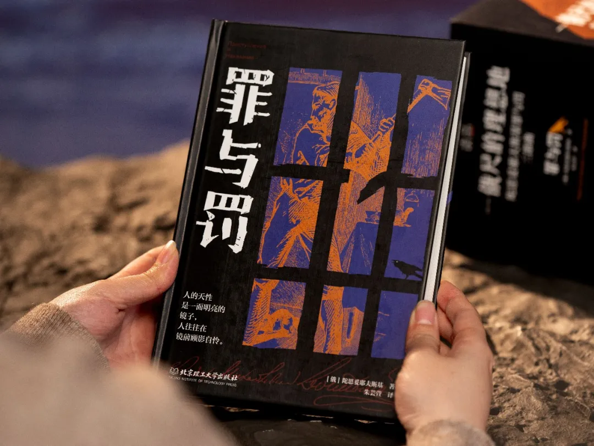
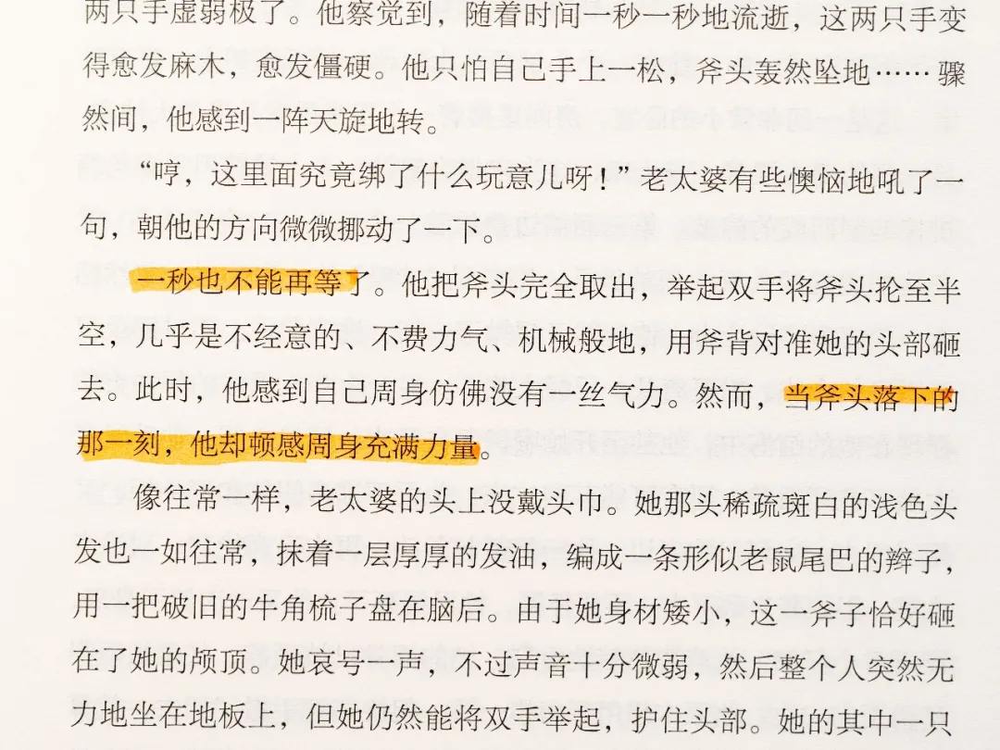
随后发现，真正的惩罚并非牢狱之灾，而是良心的凌迟dismember[dɪsˈmembə] v. 凌迟。
他总觉得衣服上有血，洗了又洗，却总能在指尖闻到血腥bloody[ˈblʌdi] adj. 血腥的味。
走在街上，他觉得每个路人都在看他，都在窃窃私语whisper[ˈwɪspə] v. 窃窃私语。
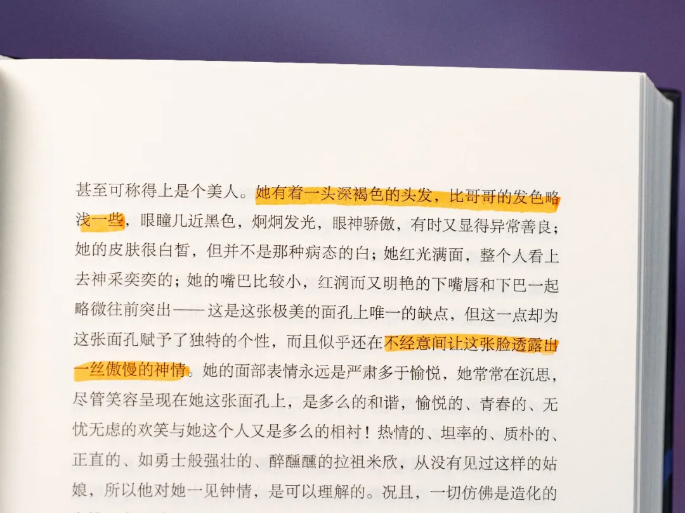
余华读完说：“这本书像是轰炸机bomber[ˈbɒmə] n. 轰炸机一样，把二十岁的我炸得晕头转向。”
罗翔坦言：“这本书之所以成为犯罪心理学巅峰peak[piːk] n. 巅峰，不在于写杀人过程，而在于写杀人后的内心——
良心被吞噬的过程，真实到让人恐惧terrify[ˈterɪfaɪ] v. 使恐惧。”
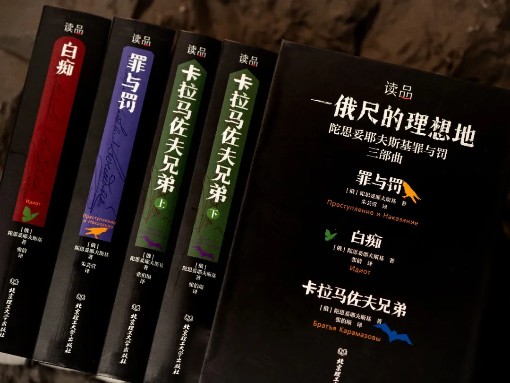
《白痴》：善良kind[kaɪnd] adj. 善良的的人，就活该被欺负吗？
男主角梅什金公爵善良、美好、充满正义感justice[ˈdʒʌstɪs] n. 正义，却是别人眼中的“白痴”。
他爱上一个被所有人唾弃spurn[spɜːn] v. 唾弃的情妇。只有他看到那个被侮辱insult[ɪnˈsʌlt] v. 侮辱的灵魂，毫无芥蒂说出：“她比你们所有人都干净。”
托尔斯泰读完大受震撼shock[ʃɒk] v. 震撼：“《白痴》是一颗钻石，剔透闪耀，让虚伪与自私无所遁形。”
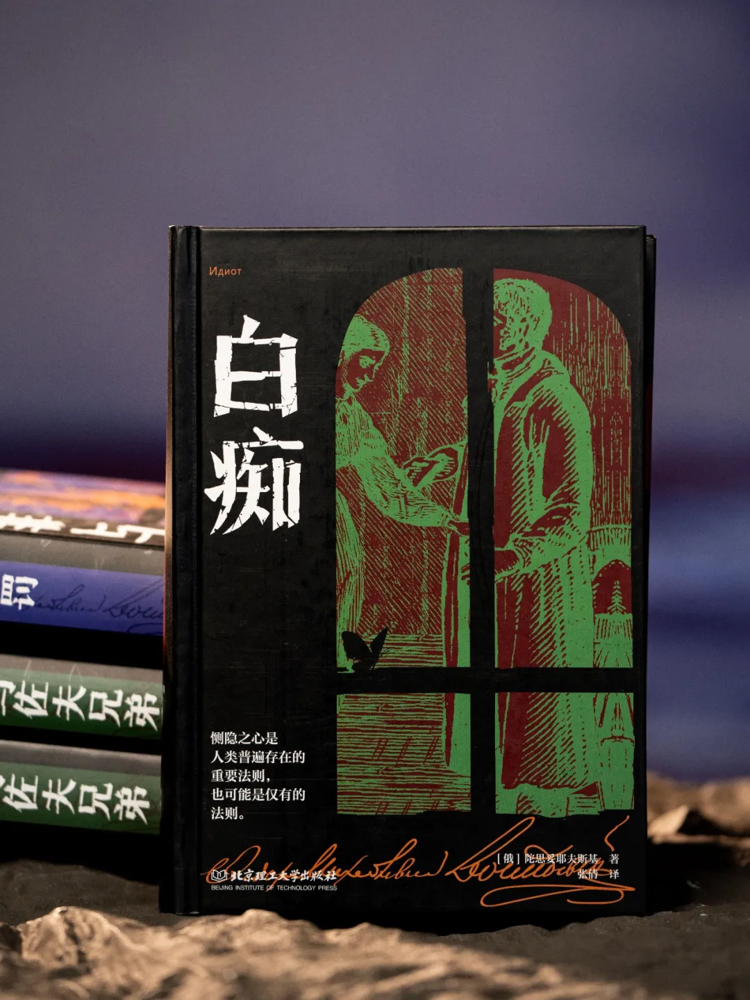
《卡拉马佐夫兄弟》：三个儿子“联手collaborate[kəˈlæbəreɪt] v. 联手”杀死了父亲
老卡拉马佐夫是个混蛋bastard[ˈbɑːstəd] n. 混蛋。酗酒、好色、虐待abuse[əˈbjuːz] v. 虐待儿子。
更要命的是，他还是跟大儿子争夺contend[kənˈtend] v. 争夺同一个女人。
表面上看是讲一桩凶杀案，实际上是一场关于欲望desire[dɪˈzaɪə] n. 欲望、理性与自由意志间的道德缠斗！
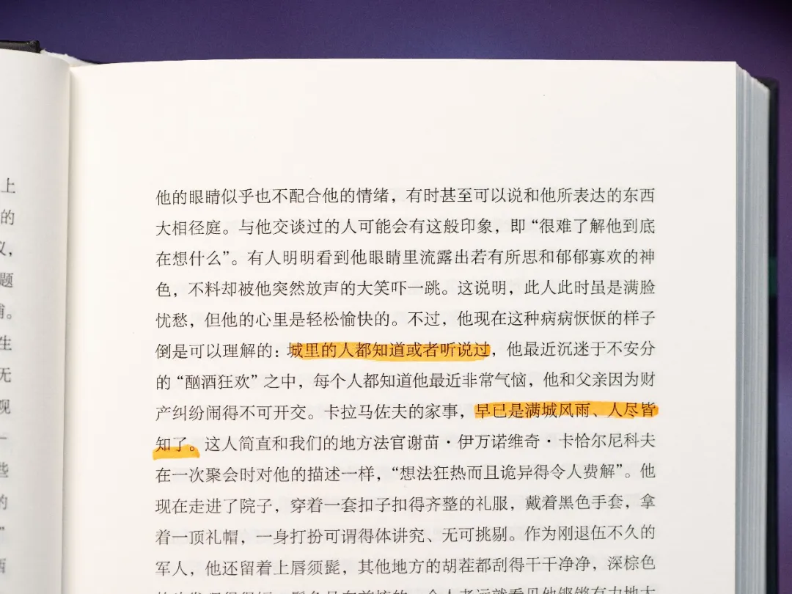
豆瓣9.6分，有人说，这是古往今来最伟大grand[ɡrænd] adj. 伟大的的小说之一，甚至当居首位！
如果你一生中必定要挑战challenge[ˈtʃælɪndʒ] n. 挑战一次文学的极限，只能是这部。
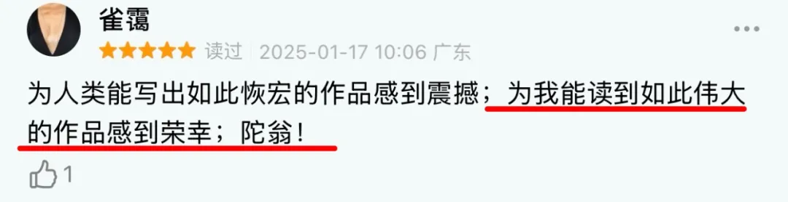
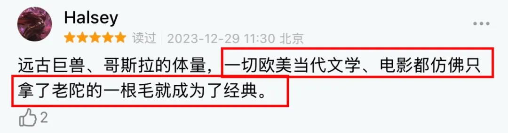
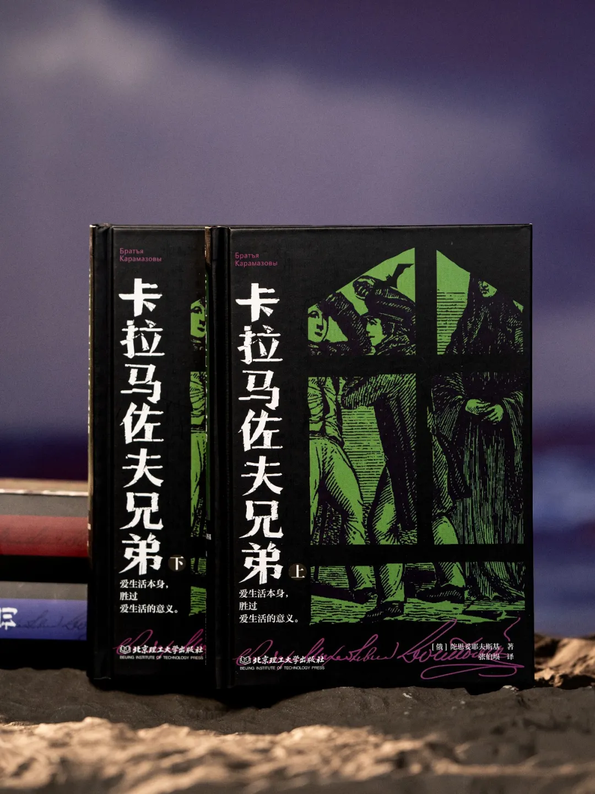
这就是为什么100年过去，陀翁的魅力charm[tʃɑːm] n. 魅力只增不减。
20岁读，吓出一身冷汗，原来人性如此幽暗gloomy[ˈɡluːmi] adj. 幽暗的。
30岁读，开始沉默顿悟，原来自己灵魂深处也有不为人知的褶皱wrinkle[ˈrɪŋkl] n. 褶皱。
40岁读，明白自己并不孤独，人生每一种痛苦都能在他笔下找到共鸣resonance[ˈrezənəns] n. 共鸣。
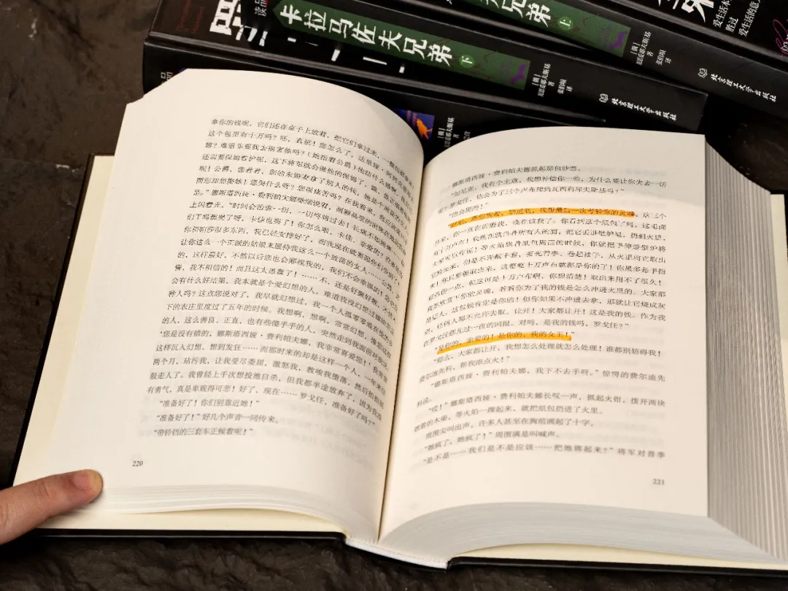
国内知名翻译家精心翻译，译文流畅fluent[ˈfluːənt] adj. 流畅的准确，
完整呈现present[prɪˈzent] v. 呈现陀翁笔下，急促的、燃烧的、滚烫的，每一句都像从心里剜出来。
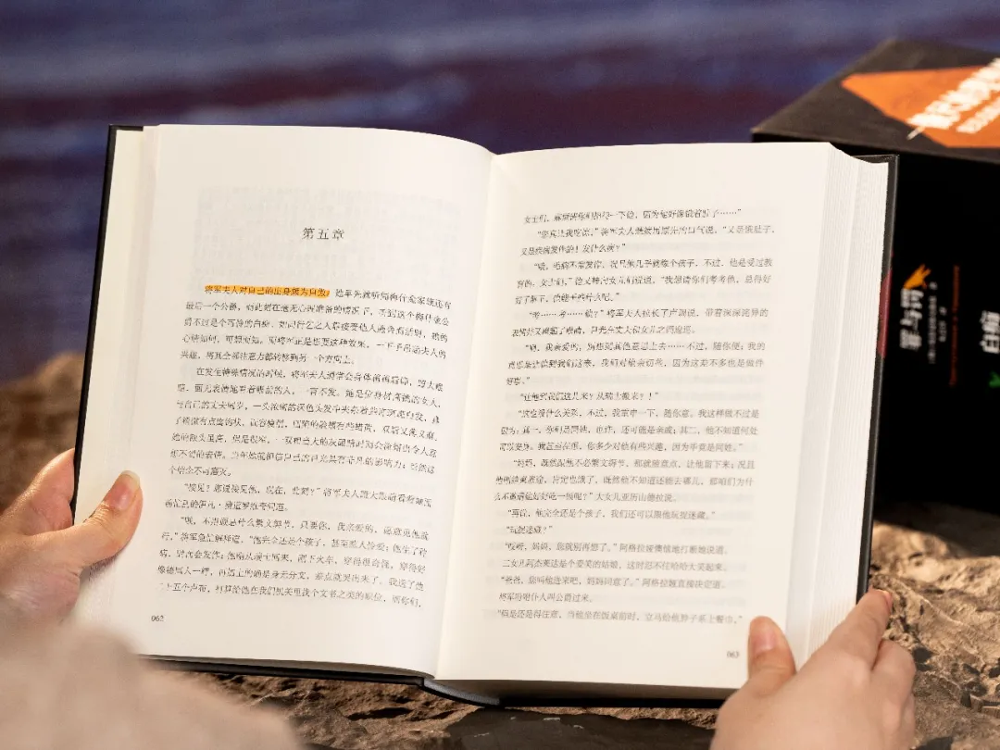
这套装帧binding[ˈbaɪndɪŋ] n. 装帧精美、由顶尖翻译家打磨的《陀思妥耶夫斯基文集》，原价399元，
读过就理解，陀翁说的“上帝和魔鬼在那里搏斗wrestle[ˈresl] v. 搏斗，战场便在人们心中。”
而什么是地狱hell[hel] n. 地狱？他说：我一直认为无力爱人的煎熬torment[ˈtɔːment] n. 煎熬便是地狱。
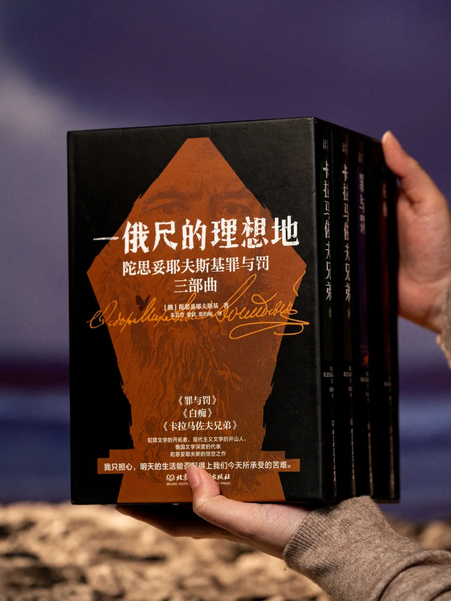
愿每个读过陀思妥耶夫斯基的人，都远离无人理解的地狱，在纷扰尘世中，永远不被内心魔鬼操控manipulate[məˈnɪpjʊleɪt] v. 操控。
清醒理智rational[ˈræʃnəl] adj. 理智的地活着，温柔坚定地被爱。
点下图，立即instant[ˈɪnstənt] adj. 立即的挑战文学极限▼

尺度scale[skeɪl] n. 尺度之大、反转之猛，比短剧都敢写
千万别被厚厚一本的体量volume[ˈvɒljuːm] n. 体量吓退，一旦读进去就知道多上头。
尺度之生猛、反转之出乎意料unexpected[ˌʌnɪkˈspektɪd] adj. 出乎意料的，当代爽文编剧见了都惊掉下巴。
比如《白痴》开篇就是一场惊心动魄thrilling[ˈθrɪlɪŋ] adj. 惊心动魄的的“美女拍卖会”：
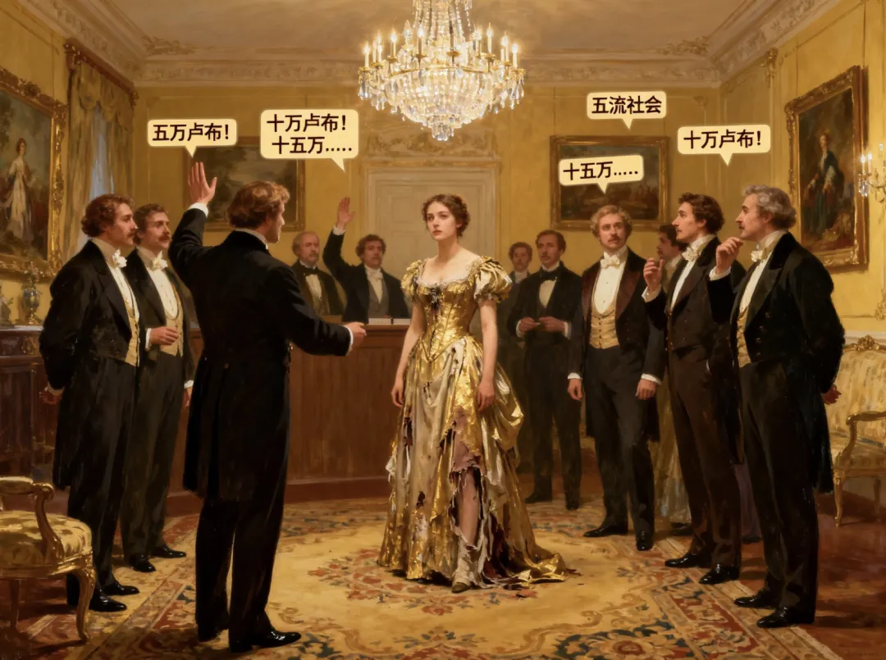
被贵族豢养breed[briːd] v. 豢养八年的情妇，娜斯塔霞。只因“主人”要娶将军女儿，就把她像货物cargo[ˈkɑːɡəʊ] n. 货物一样甩卖。
“五万卢布ruble[ˈruːbl] n. 卢布！十万卢布rouble[ˈruːbl] n. 卢布！十五万……”
客厅里灯火辉煌，一群“上流社会”的男人，正为这个女人的身体竞价auction[ˈɔːkʃn] v. 竞价。
有人想买来炫耀，有人觊觎covet[ˈkʌvət] v. 觊觎她的“嫁妆”，有人等着看她最后落到谁手里。
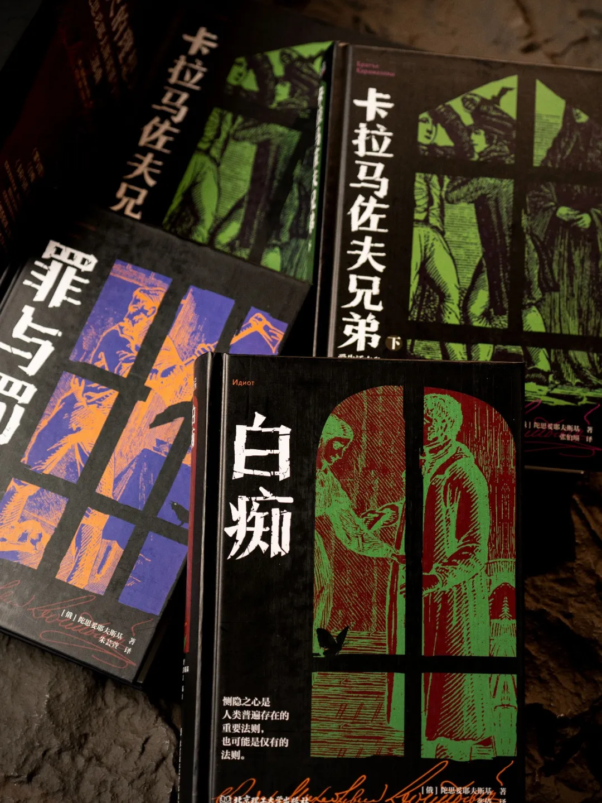
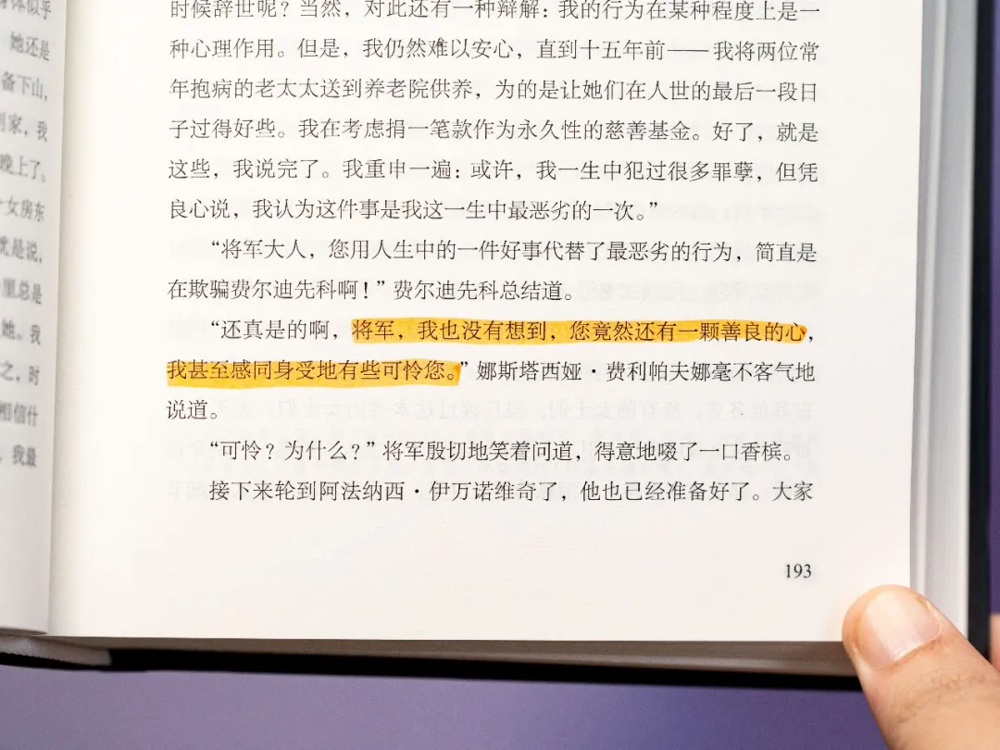
而就在这时，梅什金公爵duke[djuːk] n. 公爵站了起来。
他看向那个被当众羞辱humiliate[hjuːˈmɪlieɪt] v. 羞辱的女人，平静地说：“我要娶她。”
这四个字，如一把利刃，戳破了在场所有人的虚伪hypocrisy[hɪˈpɒkrəsi] n. 虚伪面具。
而接下来的剧情plot[plɒt] n. 剧情，更会让你三观俱碎——
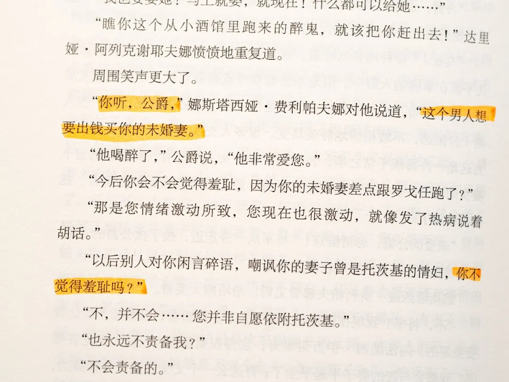
面对这份真诚的救赎redemption[rɪˈdempʃn] n. 救赎，你以为会是“美女爱上白痴”的童话？
不，陀翁只会让你见识什么叫“人性深渊abyss[əˈbɪs] n. 深渊”。
要我说，这本书就应该改成，“一个绝世美女和4个男人的爱与毁灭ruin[ˈruːɪn] v. 毁灭”。
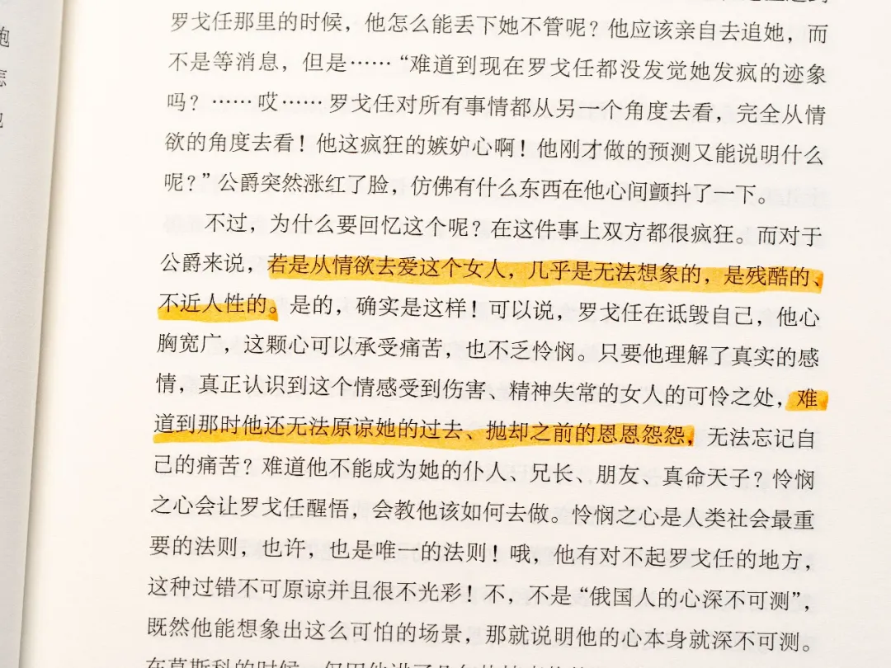
而当你以为《白痴》已经很敢写，《罪与罚》的开局，直接把你拖进一场谋杀murder[ˈmɜːdə] n. 谋杀现场——
一个穷得叮当响的大学生，心里藏着一个疯狂crazy[ˈkreɪzi] adj. 疯狂的的念头：
他要替天行道，杀死一个放高利贷的老外婆，用她的“脏钱”接济relief[rɪˈliːf] n. 接济跟自己一样的穷人。
于是傍晚dusk[dʌsk] n. 傍晚，他揣着斧子，敲开了她的门……
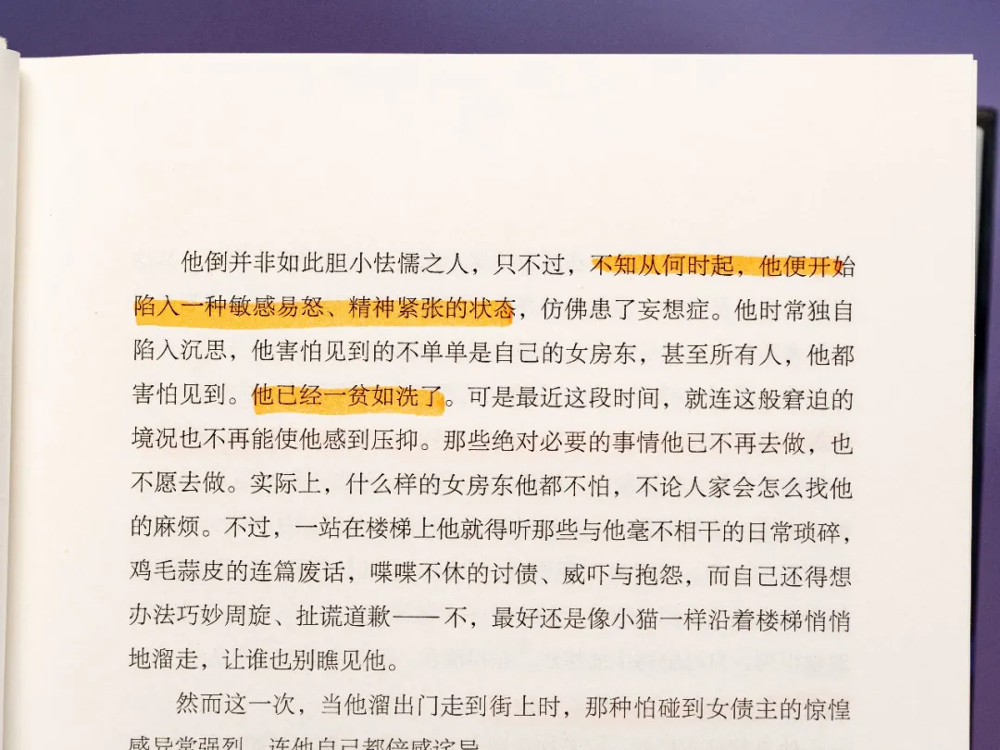
值得注意的是，陀翁并没有细写凶案homicide[ˈhɒmɪsaɪd] n. 凶案现场，
而是用整整200页，讲述narrate[nəˈreɪt] v. 讲述他作案后的内心世界——
无论吃饭、睡觉、走路、跟人说话，总能闻到指尖fingertip[ˈfɪŋɡətɪp] n. 指尖的血腥味。被恐惧和幻觉hallucination[həˌluːsɪˈneɪʃn] n. 幻觉逼疯，却无处可逃。
而警察对他说的那句话，足以让每个有过“恶念malice[ˈmælɪs] n. 恶念”的人后背发凉：
这就是鲁迅说的：陀翁最擅长的，就是把人物放在万难忍受的境地plight[plaɪt] n. 境地里，
剥去一切伪装，让你看见人性至深处的洁白pure[pjʊə] adj. 洁白的和幽微。
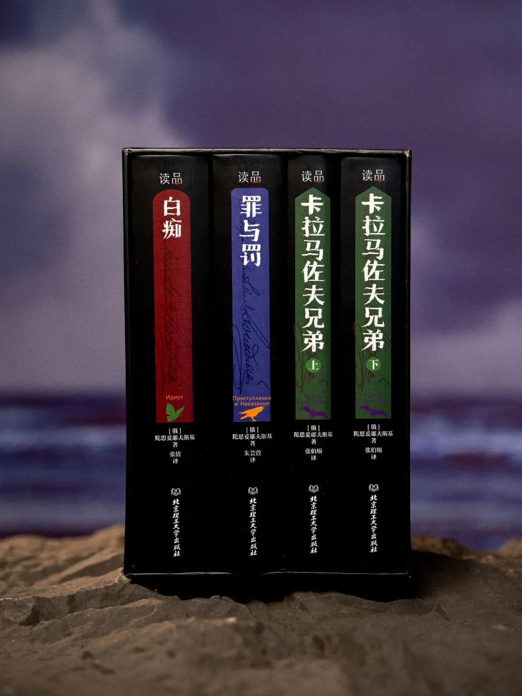
因此读过的人，绝不只是轻飘飘感叹exclaim[ɪkˈskleɪm] v. 感叹一句“人性真复杂”。
你不再轻易评判judge[dʒʌdʒ] v. 评判谁的善恶，因为你不仅见过了杀人犯心里的圣洁，也领略过圣人眼里的疯狂。
如果说有什么书能让你读一遍就能心智蜕变metamorphosis[ˌmetəˈmɔːfəsɪs] n. 蜕变、格局重塑，那只有陀翁！
越是焦虑anxious[ˈæŋkʃəs] adj. 焦虑的时，越需要读陀翁
为什么每当你感觉焦虑、迷茫confused[kənˈfjuːzd] adj. 迷茫的，找不到人生的意义，越需要读陀翁。
因为他的一生，都在人性与苦难中反复被试炼ordeal[ɔːˈdiːl] n. 试炼——
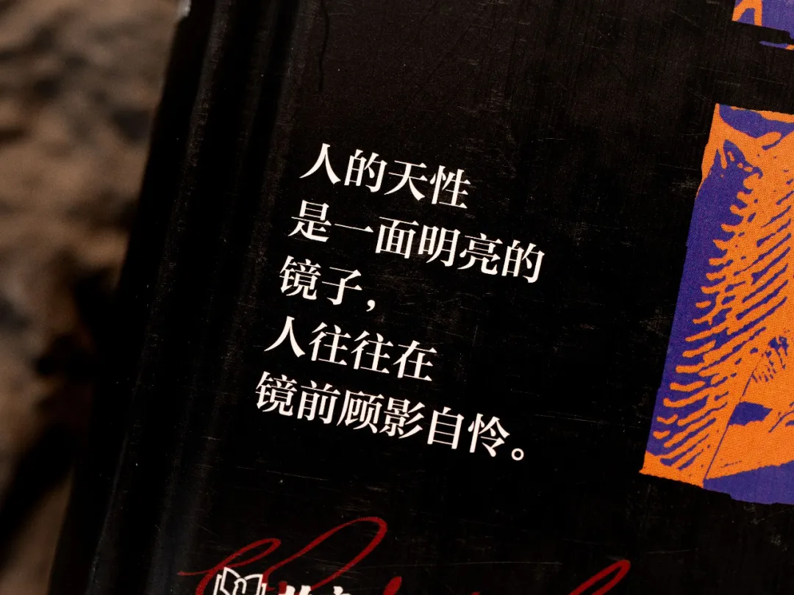
他从小在贫民窟slum[slʌm] n. 贫民窟长大，看尽人间疾苦；
28岁作为死刑犯convict[ˈkɒnvɪkt] n. 囚犯被押送刑场，亲身体验了“跟死神擦肩而过”；
10年流放生涯，跟杀人犯、强盗robber[ˈrɒbə] n. 强盗共处一室，亲眼所见人性可以无底线到什么程度；
最痛的是，为躲避债主逃亡flee[fliː] v. 逃亡时，刚出生的女儿就死在怀中……
也正是经历了这些极端人生处境，才让他对人性幽微处的洞察insight[ˈɪnsaɪt] n. 洞察，如此透彻！
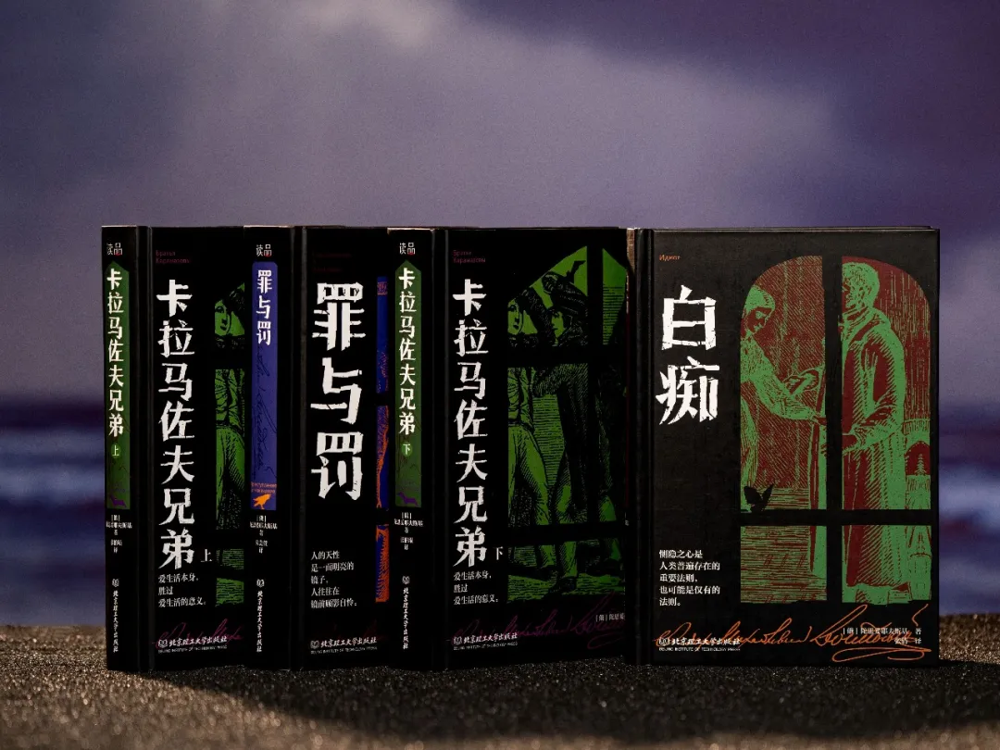
关于现代人的空虚，他精准诊断diagnose[ˈdaɪəɡnəʊz] v. 诊断：
“人们之所以痛苦agony[ˈæɡəni] n. 痛苦，是因为他们太清醒。他们看透了生活的无意义，却又没有勇气courage[ˈkʌrɪdʒ] n. 勇气结束它。”
关于道德困境dilemma[dɪˈlemə] n. 困境，他一针见血：
“如果上帝不存在，那么一切都被允许permit[pəˈmɪt] v. 允许了。但问题恰恰在于：如果一切都被允许，人为什么还要选择choose[tʃuːz] v. 选择善？”
他的思想也深刻影响了哲学家philosopher[fɪˈlɒsəfə] n. 哲学家尼采、叔本华：
“我爱人类，但我对自己感到奇怪：我越是爱抽象的人类，就越是不爱具体concrete[ˈkɒŋkriːt] adj. 具体的的人。”
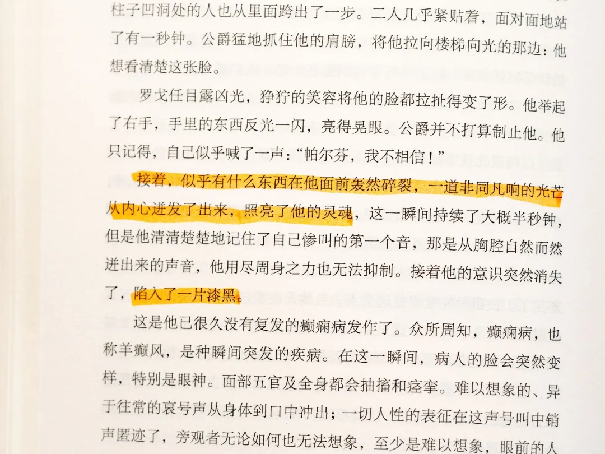
如果你也曾在深夜midnight[ˈmɪdnaɪt] n. 深夜问自己：
为什么我拥有这么多，却还是不快乐joyful[ˈdʒɔɪfl] adj. 快乐的？
如果善良得不到回报reward[rɪˈwɔːd] n. 回报，为什么还要善良？
《卡拉马佐夫兄弟》里这个场景scene[siːn] n. 场景会让你感触很深——
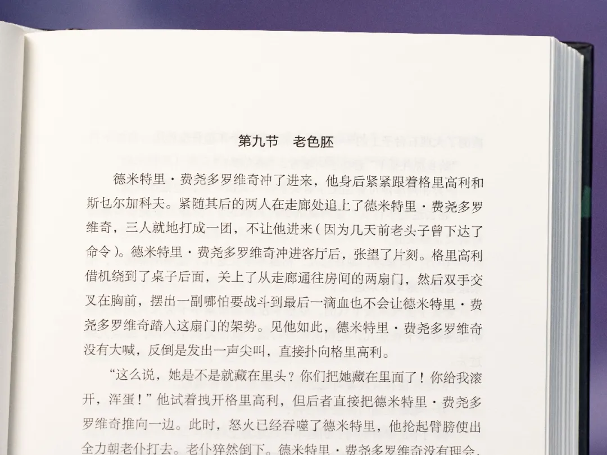
阿辽沙受人之托，给受尽屈辱humiliation[hjuːˌmɪliˈeɪʃn] n. 屈辱的斯涅吉廖夫上尉送去二百卢布。
老人看着钱，眼睛亮了——他终于可以给生病的孩子买药，给饥饿hunger[ˈhʌŋɡə] n. 饥饿的女儿买面包了。
但下一秒他却像被烙铁烫了心般忽然“失控frenzy[ˈfrenzi] n. 失控了”：
他把钞票揉成一团，狠狠摔在地上，用脚跟拼命desperate[ˈdespərət] adj. 拼命的踩，一边踩一边吼：
“你们的钱！你们的钱！……拿去，这就是你们的钱！我踩stomp[stɒmp] v. 踩了它！”
然后他突然像个小孩子似的号啕大哭weep[wiːp] v. 号啕大哭，冲进屋里，把门砰地关上。
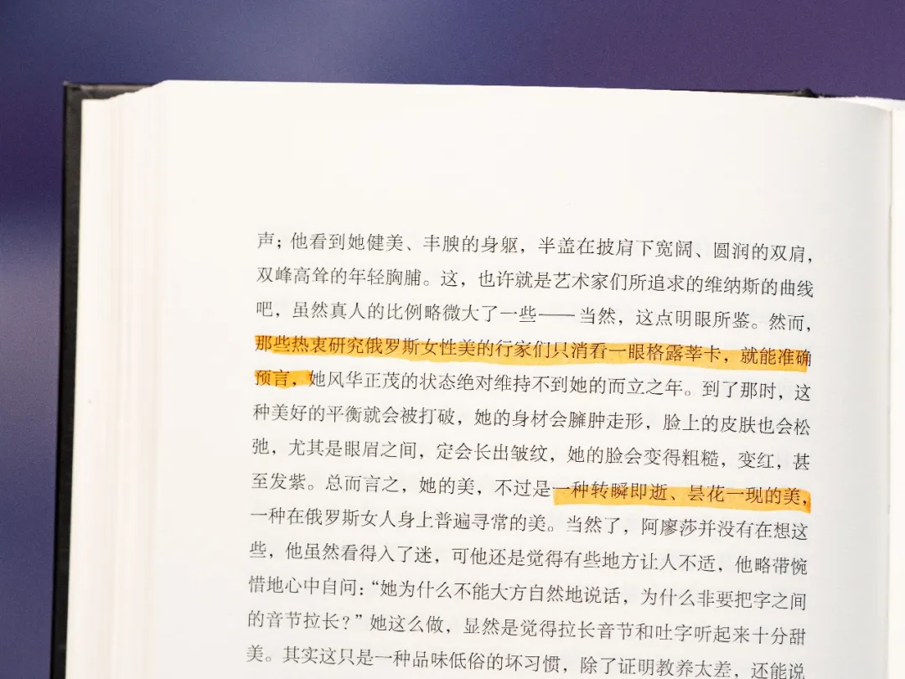
只因阿辽沙说了一句“如果不够insufficient[ˌɪnsəˈfɪʃnt] adj. 不够的，我还可以再给您”。
这句话像刀子，戳穿了他——他意识到自己刚才那副感恩戴德grateful[ˈɡreɪtfl] adj. 感激的的样子，在别人眼里多么“可怜”。
二百卢布被踩碎的，不是一个穷人的希望hope[həʊp] n. 希望。
是一个穷人在这个世界上，仅存的自尊dignity[ˈdɪɡnəti] n. 自尊。
读到这真的头皮发麻，他把人性的幽微，看得太透了，拿捏grasp[ɡrɑːsp] v. 拿捏得太准了。
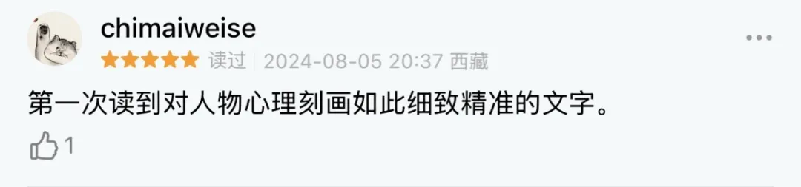
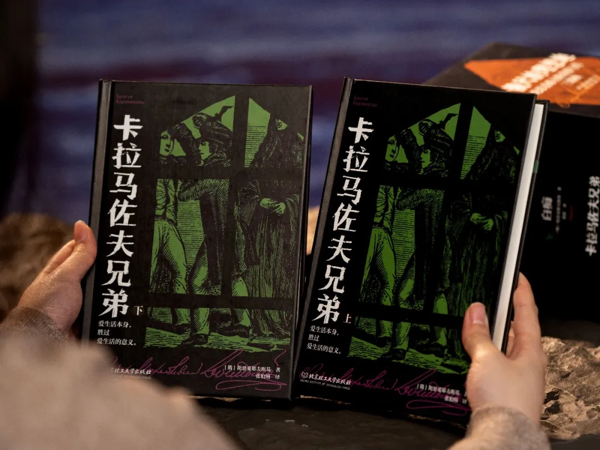
哪怕仅仅是这样一个只出场三页的小角色，都刻画得鲜活vivid[ˈvɪvɪd] adj. 鲜活的无比。
越读越觉得，那些你白天不敢想的念头，深夜不敢认的阴暗shadow[ˈʃædəʊ] n. 阴暗，全被他抖落出来了。
能把人心描绘至此，你会深深懂得余华那句“把内心轰炸成一片废墟wreckage[ˈrekɪdʒ] n. 废墟，依旧欲罢不能！”
权威authority[ɔːˈθɒrəti] n. 权威译本×精美装帧×超值典藏
值得读一辈子lifetime[ˈlaɪftaɪm] n. 一辈子的人生之书
诺奖作家writer[ˈraɪtə] n. 作家纪德说，读陀思妥耶夫斯基是一件事终身大事。
选对版本，才能真正走进他的灵魂宇宙universe[ˈjuːnɪvɜːs] n. 宇宙。
这套《心灵的理想地：陀思妥耶夫斯基三部曲》版本堪称豪华luxury[ˈlʌkʃəri] n. 豪华：
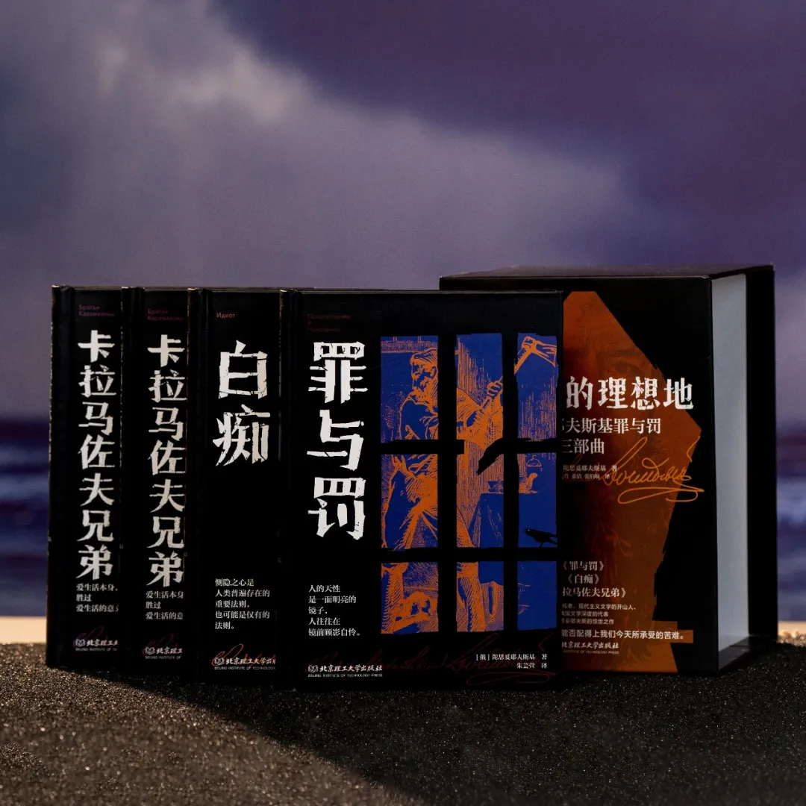
◎ 翻译精准precise[prɪˈsaɪs] adj. 精准的，原汁原味
俄版直译，内容详实无删减，完整保留陀翁原著的每一处细节detail[ˈdiːteɪl] n. 细节；
更正了市面上翻译错误，流畅smooth[smuːð] adj. 流畅的性更高，读起来如行云流水；
每部作品都在卷首增加主要出场人物character[ˈkærəktə] n. 人物介绍，谁跟谁有情，谁跟谁有仇，一看就懂。
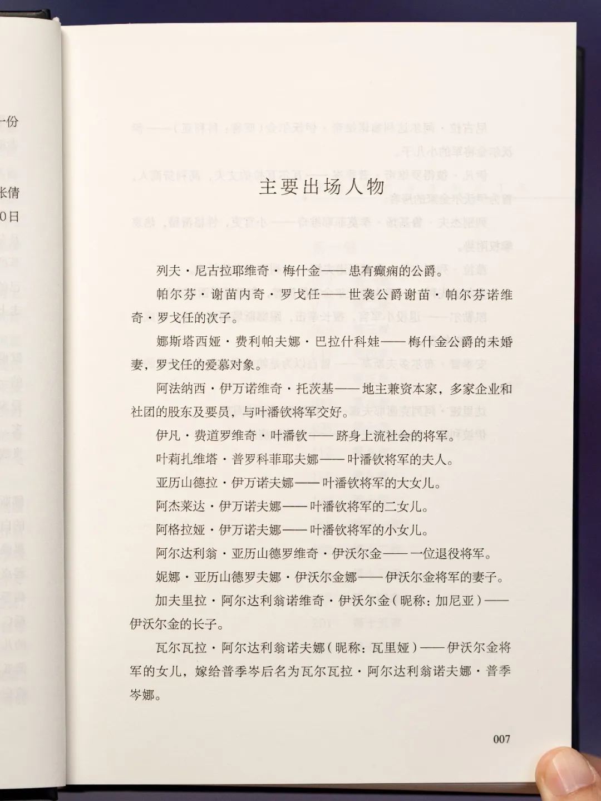
◎ 装帧精美exquisite[ɪkˈskwɪzɪt] adj. 精美的，质感高级
锁线精装，硬壳封面，沉甸甸的分量，是对一位文学巨匠应有的尊重respect[rɪˈspekt] n. 尊重；
内页选用优质premium[ˈpriːmiəm] adj. 优质的衬纸，柔和护眼，从傍晚读到深夜，眼睛也不会累；
书脊可平摊180度，阅读体验experience[ɪkˈspɪriəns] n. 体验极佳，收藏送礼两相宜。

一次收录陀翁3部高分传世classic[ˈklæsɪk] adj. 传世的代表作，原价399元。限时特惠bargain[ˈbɑːɡɪn] n. 特惠，只要99元！
不到两张电影票价格，就能收获harvest[ˈhɑːvɪst] n. 收获：
人类文学literature[ˈlɪtrətʃə] n. 文学史上zui深刻的三部作品
陪伴accompany[əˈkʌmpəni] v. 陪伴一生的“灵魂先师”
在迷茫时指引guide[ɡaɪd] v. 指引方向的“精神地图”
而一套好译本真正的价值value[ˈvæljuː] n. 价值，远不止这些——
在迷茫时刻，看清困局的真相truth[truːθ] n. 真相；
在焦虑泛滥时，保持一份清醒的自省introspect[ˌɪntrəˈspekt] v. 自省；
更能赋予endow[ɪnˈdaʊ] v. 赋予你在不确定的世界里，坚守自我的勇气。
特惠仅限3天，喜欢抓紧seize[siːz] v. 抓紧入手▼
购买成功后，可以在公众号菜单栏点击「买点啥」-「我的订单」里查看您的订单状态及物流logistics[ləˈdʒɪstɪks] n. 物流信息。感谢您的支持support[səˈpɔːt] n. 支持！
*文案及产品服务由合作商提供provide[prəˈvaɪd] v. 提供：该商品由合作方直销。